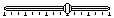

- Title on the left side
- Allowed to have menus
- Has no border
- Title centered
- No menus allowed
- Has help button on the top right corner
- Has a border with round corner
A form is like the canvas of a painting. Within a form you can place user interface elements like labels, buttons, and check boxes. Each Palm application contains at least one form which is opened when the application starts up. There are two types of forms, non-modal (regular) and modal.
| Regular Form | Modal Form |
|
|
|
|
A form has many properties other than its size. To simplify the design process, OrbForms Designer's Inspection tool allows you to adjust all of a form's properties and add code to handle user events.
| Property | Meaning |
| Name | The name that is used in source code to refer to the form. |
| Text | The form's title |
| MenuBar | A regular form is allowed to have a menu bar, you can create menu bars in the form and pick one of them to be your main menu bar. |
| Modal | Determines if this is a modal form. |
| HelpID | A string from the string table which is displayed when the "i" is clicked in a modal form's title bar. |
| Default Button | A modal form should have a default button. If the user attempts to switch application when the form is active, the OS will simulate a click on this button to close the form. The default button should close the form without performing any undesirable operation (such as deleting something). |
| Resizable | Determines if a form should resize or move when the screen layout changes. If this is true, XResize and YResize must be specified on the form and all of its controls. |
| XResize | Determines the form's horizontal resize behavior - Attach left, Attach right, or Stretch |
| YResize | Determines the form's vertical resize behavior - Attach top, Attach bottom, or Stretch |
Next to the Property group, there is a size and handler group. The size group simply states the form's size. The handler group lists all the events a form can have. Clicking on a handler will jump to the handler code if it exists (in which case the handler name will be bold), or offer to create the handler for you. For a complete list of events and their description, refer to the UIForm object in the Library Reference.
OrbForms Designer supports a rich set of user interface elements. Almost all the controls offered by the Palm OS can be created with OrbForms Designer. If these controls do not meet your need, you can create a gadget - a custom control for which you provide the drawing and can define your own events.
For a list of events, methods, and runtime properties of these controls, refer to the User Interface section of the Library Reference.
| Element | How it looks | Description | Remarks |
| Button | A round rectangle shape with a text string in the center. | You can select a bitmap as the button's face instead of the text, but your app will only work on OS 3.5 and above. | |
| Check Box | A square box with a text string on the right side, representing a true/false property. | ||
| Push Button |
|
A rectangle box with a text string in the center. Many push buttons are created beside one another, representing a group of mutually-exclusive options. | Each push button in a group must have the same group id > 0. You can select a bitmap as the button's face instead of the text, but your app will only work on OS 3.5 and above. |
| Repeat Button | Looks like a button, however the button is repeatedly selected until the pen lifts. | You can select a bitmap as the button's face instead of the text, but your app will only work on OS 3.5 and above. | |
| Label | A non-editable text on the screen. | Although the text of a label can be changed at runtime, it cannot contain a longer string that was specified in the Visual Designer. | |
| Bitmap | This control displays a bitmap of your choice on the Palm Screen. | If you want your program to look good on color screens, remember to provide grayscale and color bitmaps. | |
| Slider |  | In Palm OS 3.5 or later, slider controls are added. It shows a value within a particular range. On Palm OS previous to 3.5, this control will not be displayed. | The OS provides a default slider background and slider thumb image, but you can also provide custom images. |
| Scroll bar | A vertical scroll bar. Palm OS does not support horizontal scroll bars. | These are generally used in conjunction with multi-line fields. | |
| Popup |
|
Displays a text label and an arrow pointing down on the left. A popup is usually associated with a list. | If the text label changes, the width of the control expands or contracts to the width of the new label plus the graphic element |
| Selector |
|
Displays a text label surrounded by a gray rectangular box. | If the text label changes, the width of the control expands or controls to the width of the new label. |
| List | A rectangular box with multiple line of text as choices | If a popup is associated with the list, the list will be hidden until the popup is selected. | |
| Field | A field displays one or more lines of text and allow the user to edit the text | ||
| Gadget | Looks like an empty box. The gadget type is displayed in the center. | The developer must handle the pen events and drawing since there is no default behavior for the control. |
There are two ways to add controls to a form:
| Right click on the form node in the Workspace | Right click on the form in the Visual Designer |
|
The element will appear at the (0,0) position. |
The element will appear at the location where you right clicked. |
A regular form can have a menu bar, which contains one or more menus. Each menu contains one or more menu items and separators. A menu item should have an onselect handler which is called when the user taps the menu item or enters the associated shortcut key. To create a separator, create a menu item and set its text to a dash "-".
| Palm OS Menu | OrbForms Designer Workspace View |